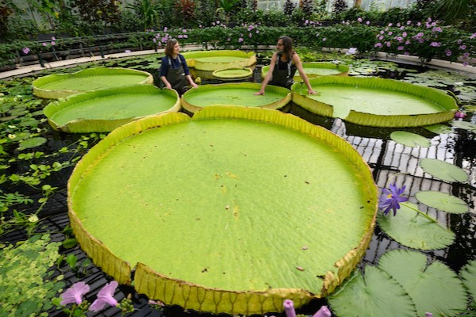
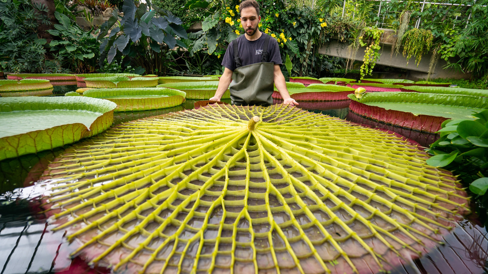

Esistono tre ninfee dedicate alla regina Victoria d'Inghilterra che certamente non passano inosservate. Native del Sud America hanno dimensioni smisurate e si chiamano: Victoria amazonica, Victoria boliviana e Victoria cruziana. È quest'ultima in particolare che detiene il record per dimensione: le sue foglie hanno raggiunto ben 3,2 metri di diametro e potreste trovare bambini che tranquillamente vi riposano sopra galleggiando. Questa pianta divenuta espressione di sfarzo inglese e presente nei Kew Gardens ha quindi anche la funzione di gonfiabile estivo, grazie al reticolo intricato presente sulla faccia inferiore della foglia dove restano intrappolate sacche d'aria. Ma aspettate prima di preparare costume e cappellino: sul bordo di queste enormi foglie c'è una fila di spine pronte a difendersi da ospiti indesiderati. In natura questa precauzione è utile, visti gli attacchi che la ninfea riceve da uccelli e pesci.
